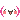
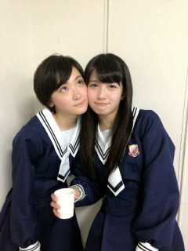

| 2013/03 22 Fri | 遅くなりましたが... |
おばんです!!
いこまですヽ(・∀・)ノ
うれしいことにお仕事を沢山させて頂いております!!
嬉しい!!
ありがたい!!
チャンスを無駄にしないっ
いこまはきっとリアクションが得意だと思うから、テレビで面白いことできるようになるっかな？ヽ(・∀・)ノ
ルックスはメンバーに任せる!!
よろしくねっ

そして20日に全国握手会が行われました！
来てくださった皆さんありがとうございました!!
全握は沢山来てくださるから嬉しい

ゆっきーなと同じレーンでした!!
１３日の金曜日が流れるたび二人して踊ってました〜ヽ(・∀・)ノ

ゆっきーな〜
そして、チャリティーliveに来てくださった皆さんありがとうございました。
まだ乃木坂が出来る支えなどは小さいかもしれないけど、皆さんの力も加わって大きな事が出来るようになると思います。
これからも笑顔を増やしていきたい。
ご協力よろしくお願いします！
あと、16人のプリンシパル始まりますね。
今回は前みたいにはならないようにっ!!
気持ちコントロールしなくちゃね。
あれだな〜
ちゃんと自分に言い聞かせてやっていかないとね。
いこまちゃんは演技がへたくそだから、今回は少しでもいいからうまくなるって言うのを目標にしようかしら!?
まだレッスンとかやっていないからわからないけど。
皆さんもぜひ楽しみにしていてください！
がんばるぞっ!!
へばなっ!!
コメント(344)
2013/03/22 22:42